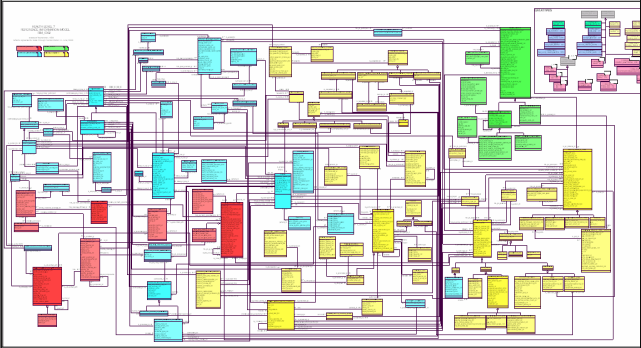

PostgreSQL as app platform
PostgreSQL is Operation System
for data
Simon Riggs
App Platform?
JavaScript inside PostgreSQL

Nikolay Ryzhikov

HealthSamurai

MedClient EHR

MedClient
- Monolith + 10 services
- ~0.5M ruby SLOC + jvm, js etc
- Auto install on AWS (chef/sensu/etc)
- 5 databases ~ 1000 tables
- no heigh load (100 sessions)
- no big data (0.5T)
- structural complexity

Domain Complexity
We need standard!
Which?
- HL7 v2
- HL7 v3
- OpenEHR
- FHIR
MGrid
Database for HL7 v3 RIM (Postgres)
FHIR

Fast Healthcare Interoperability Resources
FHIR: ~100 Resources

FHIR: REST API
- CRUD
- History
- Search
- Terminology
- ...
Polyglot

Ruby, Clojure, JVM, JavaScript, .NET ...
fhirbase
Relational Storage
for FHIR resources
fhirbase
SELECT fhir.create($JSON$
{
resourceType: "Patient",
name: [{text: "Ivan"}],
birthDate: "1981-01-02"
}
$JSON$);
SELECT fhir.search('Patient', 'name=ivan&birthdate=>1970');
works!?
- fhirface, Aidbox - clojure
- Netrika (SPb) - .NET
- Kainos (UK) - Java
- ...
But, programmers UX is :(
UX & tooling
- own preprocessor
- own modules
- own test framework
- own migrations
Preprocessor
func _build_url(_cfg_ jsonb, VARIADIC path text[]) RETURNS text
SELECT _cfg_->>'base' || '/' || (SELECT string_agg(x, '/')
FROM unnest(path) x)
CREATE OR REPLACE FUNCTION
module._build_url(_cfg_ jsonb, VARIADIC path text[]) RETURNS text
AS $$
SELECT _cfg_->>'base' || '/' || (SELECT string_agg(x, '/')
FROM unnest(path) x)
$$ language SQL immutable;
Modules
-- #import ./fhirbase_json.sql
-- #import ./fhirbase_gen.sql
-- #import ./fhirbase_coll.sql
-- #import ./fhirbase_util.sql
-- #import ./fhirbase_generate.sql
func _build_url(_cfg_ jsonb, VARIADIC path text[]) RETURNS text
SELECT _cfg_->>'base' || '/' || (SELECT string_agg(x, '/')
FROM unnest(path) x)
Tests
BEGIN;
_extract_id('rid/_history/vid') => 'rid'
-- SELECT expect(_extract_id('rid/_history/vid'),'rid')
SELECT fhirbase_generate.generate_tables('{Patient}');
setv('createOutcome',
fhirbase_crud.create('{}'::jsonb, :'pt_json')
);
getv('createOutcome')->>'resourceType' => 'OperationOutcome'
getv('createOutcome')#>>'{issue,0,code,coding,1,code}' => '400'
ROLLBACK;
threshold
func _expand_search_params(_resource_type text, _query text) RETURNS setof query_param
WITH RECURSIVE params(parent_resource, link_path, res, chain, key, operator, value) AS (
SELECT null::text as parent_resource, -- we start with empty parent resoure
'{}'::text[] as link_path, -- path of reference attribute to join
_resource_type::text as res, -- this is resource to apply condition
ARRAY[_resource_type]::text[] || key as chain, -- initial chain
key as key,
operator as operator,
value as value
FROM fhirbase_params._parse_param(_query)
WHERE key[1] NOT IN ('_tag', '_security', '_profile', '_sort', '_count', '_page')
UNION
SELECT res as parent_resource, -- move res to parent_resource
fhirbase_coll._rest(ri.path) as link_path, -- remove first element
this.get_reference_type(x.key[1], re.ref_type) as res, -- set next res in chain
x.chain AS chain, -- save search path
fhirbase_coll._rest(x.key) AS key, -- remove first item from key untill only one key left
x.operator,
x.value
FROM params x
JOIN searchparameter ri
ON ri.name = split_part(key[1], ':',1)
AND ri.base = x.res
JOIN structuredefinition_elements re
ON re.path = ri.path
WHERE array_length(key,1) > 1
)
SELECT
parent_resource as parent_resource,
link_path as link_path,
res as resource_type,
fhirbase_coll._butlast(p.chain) as chain,
ri.search_type,
ri.is_primitive,
ri.type,
fhirbase_coll._rest(ri.path)::text[] as field_path,
fhirbase_coll._last(key) as key,
operator,
value
FROM params p
JOIN searchparameter ri
ON ri.base = res
AND ri.name = key[1]
where array_length(key,1) = 1
ORDER by p.chain
Logic in DB

Logic in DB (Smart Storage): PRO
- Performance (faster transactions, data locality)
- Consistency (like incapsulation)
- Integration by db
- Reuse
Logic in DB: CONTRA
- Overload database
- No good pracitces (TDD, modules etc)
- Archaic languages
- Slow development
Unresolvable?
- +modern language
- +modularity
- +tooling
Which lang?

- everywhere (interop)
- everyone knows
- fast
plv8: V8 JavaScript in pg
- Scalar function calls
- Trigger function calls
- Mapping between JS and DB types
- Prepared Statements and Cursors
- Subtransaction & Window function API
- Remote debugger
- Runtime separation across users
plv8: functions
CREATE FUNCTION plv8_test(keys text[], vals text[])
RETURNS json AS $$
var obj = {};
for(var i=0; i<keys.length; i++){
obj[keys[i]] = vals[i];
}
return obj;
$$ LANGUAGE plv8 IMMUTABLE STRICT;
SELECT plv8_test(ARRAY['name', 'age'], ARRAY['Tom', '29']);
-- plv8_test
---------------------------
-- {"name":"Tom","age":"29"}
plv8: returning function calls
CREATE TYPE rec AS (i integer, t text);
CREATE FUNCTION set_of_records() RETURNS SETOF rec AS
$$
// plv8.return_next() stores records in an internal tuplestore,
// and return all of them at the end of function.
plv8.return_next( { "i": 1, "t": "a" } );
plv8.return_next( { "i": 2, "t": "b" } );
// You can also return records with an array of JSON.
return [ { "i": 3, "t": "c" }, { "i": 4, "t": "d" } ];
$$
LANGUAGE plv8;
SELECT * FROM set_of_records();
plv8: triggers
CREATE FUNCTION test_trigger() RETURNS trigger AS
$$
plv8.elog(NOTICE, JSON.stringify(NEW));
plv8.elog(NOTICE, JSON.stringify(OLD));
plv8.elog(NOTICE, TG_OP);
plv8.elog(NOTICE, TG_ARGV);
if (TG_OP == UPDATE) {
NEW.i = 102;
return NEW;
}
$$ LANGUAGE plv8;
CREATE TRIGGER test_trigger
BEFORE INSERT OR UPDATE OR DELETE
ON test_tbl FOR EACH ROW
EXECUTE PROCEDURE test_trigger('foo', 'bar');
plv8: cursors
var plan = plv8.prepare(
'SELECT * FROM tbl WHERE col = $1', ['int']
);
var rows = plan.execute( [1] );
var sum = 0;
for (var i = 0; i < rows.length; i++) {
sum += rows[i].num;
}
plan.free();
return sum;
plv8: bench
| alg | sql | v8 | pgsql |
|---|---|---|---|
| noop | 1 | 3.9 | 5.0 |
| add | 1 | 3.1 | 4.8 |
| str | ~ | 1 | 1.8 |
| get key | 1 | 4.4 | 2.8 |
| iter | ~ | 1 | 1.2 |
| exec | ~ | 1.2 | 1 |
| polynom | ~ | 1 | 200 |
Not one language
- CoffeeScript
- TypeScript
- ClojureScript
- PureScript
- pgsql :)
- your?
jsx -> jsql
var HelloMessage = React.createClass({
render: function() {
return Hello {this.props.name};
}
});
// why not
var x = 5;
(SELECT .* FROM users where id = x)
.map(function(u){
return u.name;
})
We need more
- + modularity
- + tooling
Event-driven I/O server-side
JavaScript environment based on V8
PG + PLV8 + NODEJS?

pg.js: concept
- write in node
- compile into plv8
pg.js: mock plv8
Client = require('pg-native')
client = new Client
client.connectSync(conn_string)
global.INFO="INFO"
module.exports =
execute: = ->
client.querySync.apply(client, arguments).map(coerse)
elog: (x, msg) ->
console.log "#{x}:", msg
quote_literal: (str)->
str && client.pq.escapeLiteral(str)
quote_ident: (str)->
str && client.pq.escapeIdentifier(str)
pg.js: write in node
util = require('./util')
uuid = (plv8)->
plv8.execute('select gen_random_uuid() as uuid')[0].uuid
exports.uuid = uuid
create = (plv8, resource)->
table_name = util.table_name(resource_type)
# ...
json = JSON.stringify(resource)
plv8.execute """
INSERT INTO #{table_name}
(id, version_id, content)
VALUES ($1,$2,$3)
""", [id, version_id, json]
resource
pg.js: test in node
plv8 = require('../lib/plv8')
crud = require('../src/crud')
schema = require('../src/schema')
describe "CRUD", ()->
beforeEach ()->
schema.generate_table(plv8, 'Patient')
it "read", ()->
pt = {resourceType: 'Patient', name: {text: 'Albert'}}
pt_created = crud.create(plv8, pt)
expect(pt_created.id).toBeTruthy()
expect(pt_created.meta.versionId).toBeTruthy()
pg.js: compile into plv8
Module = require("module")
oldrequire = Module::require
Module::require = (fl) ->
currentModule = fl
oldrequire.apply this, arguments
oldcompile = Module::_compile
Module::_compile = (answer, filename) ->
for k,v of @exports when v.plv8?
plv8_exports[k] ={fn: v, filename: filename}
pg.js: compile into plv8
CREATE OR REPLACE FUNCTION #{def_fn} AS $$
var deps = {}
var cache = {}
#{modules_js}
var require = function(dep){
if(!cache[dep]) {
var module = {exports: {}};
deps[dep](module, module.exports, require);
cache[dep] = module.exports;
}
return cache[dep]
}
return require('#{mod}').#{k}#{def_call};
$$ LANGUAGE plv8 IMMUTABLE STRICT;
pg.js: call in postgres
select fhir.read('StructureDefinition', 'Patient') as read
Experiments on github
pg.js: Road Map
- remove death code (Google closure comp)
- extend plv8 - require, native fn call,....
- deploy
- apply to fhirbase